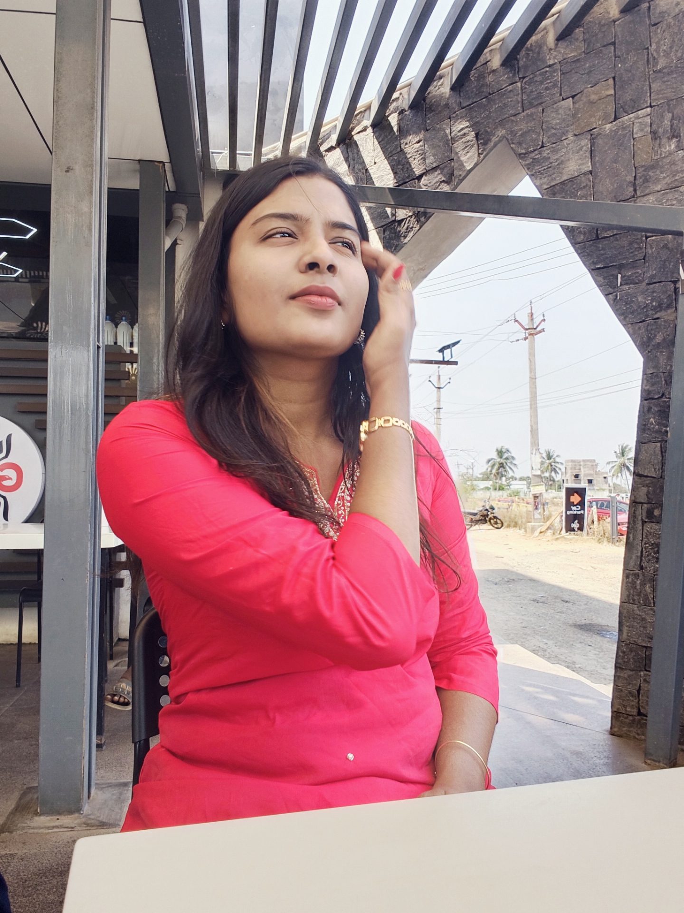

Python Developer | Web Developer
Motivated postgraduate student with strong foundations in Python development, seeking an entry-level Python Developer role. Passionate about building efficient applications and eager to contribute to organizational success.
Developed login & registration system using Python (Django), HTML and CSS. Built admin panel and responsive interface.
Implemented MRI image segmentation using Python, Deep Learning and YOLO for neurological abnormality detection.